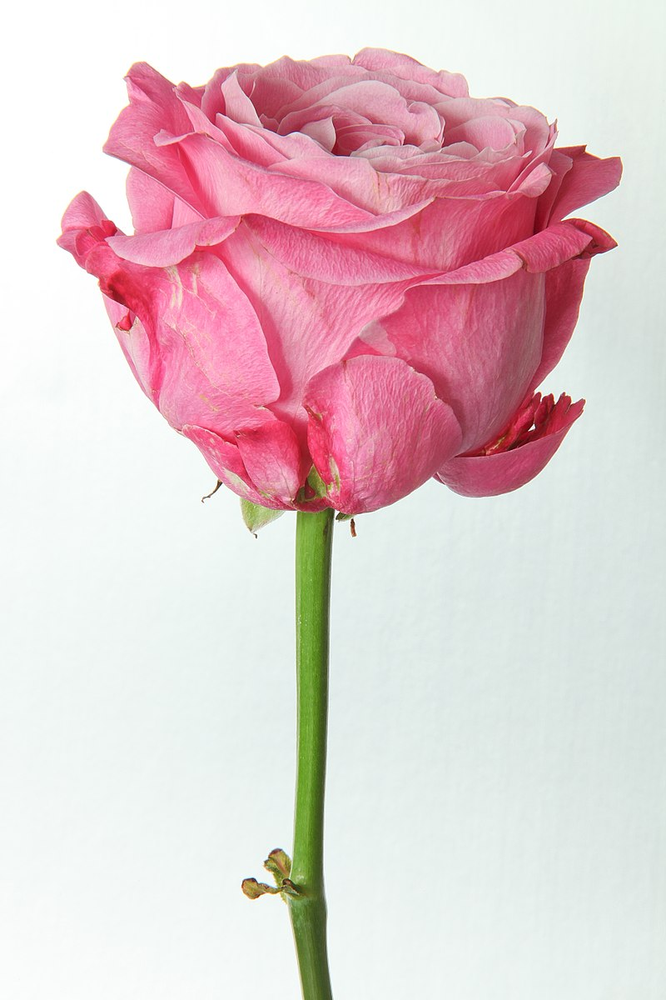

Curriculum vitae
Zouhour Hamza
Date de naissance :03/05/1994
Adresse: korba-Nabeul
Tel:99 787 025
E-mail:zouhourhmza@gmail.com

Formation académiques
2013: bac sciences expérimentales
2015: prepa bg soukra
2018: Diplome national d'ingénieur en Agronomie et Environnement à INAT
Compétences linguistiques
Arabe
Français
Anglais
Compétences informatiques
maitrise des logiciels de l'office
maitrise des logiciels de SIG
photoshop
Activités sociales et loisirs
membre active à l'association ATPNE
randonnée
Qualités
autonome
ponctuelle
rigoureuse